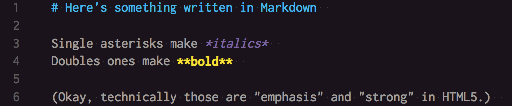

Scholars' Commons
Scholarly Technologies Librarian Opportunities
http://www.ryanpatrickrandall.com/talks/iustl.html
Created by Ryan P. Randall / @foureyedsoul
Hello everyone, it's great to have this chance to talk with all of you about what I think are the exciting opportunities for the Scholarly Technologies Librarian to do here in the Scholars' Commons. If we haven't already met, my name is Ryan Randall. Also, if you happen to have brought a laptop or a smartphone with you, I'd encourage you to type this URL into whatever browser you like and load up these slides on your own device since we will be doing a couple interactive parts in a few minutes. As you do that, I'll tell you little more about myself. I'm currently in the MLS program here at IU, and I anticipate graduating this month. Previous to coming here, I earned a Master's in Visual and Cultural Studies from the University of Rochester and a Master's in English from the University of California, Riverside. Along the way, I've also taught a number of composition or other humanities courses at various colleges and community colleges. So, what do I think are some of the most exciting aspects of this position?*RIGHT*
Opportunities!
Problem Solving
Collaborating with & Training Others
Continually Learning
There are three main principles that underly most of the opportunities I see happening here in the Scholar's Commons. We'll see specifics of each soon enough.*Right*
Problem Solving
Some of us enjoy tinkering with technology, but that alone doesn't make something into "scholarly technology." Researchers and librarians typically use technology to solve problems, often ones that involve time or scale. When you're posed with a complicated problem—even one that might be fun to solve without technology—tech can help you out in a crunch. *down to show gif* *down*
Markdown—writing for yourself or the web

Often when people hear "scholarly technologies," they think about bibliographic management tools like Endnote, Zotero, or BibTeX. Today I'm going to discuss something perhaps a little less familiar that solves a different problem many of us face: typing notes or writing something that will end up on the web. Does anyone else remember the first few years of smartphones, when you couldn't use Word, Google Docs, or Apple Pages? When I first got an information phone, I was in the program at Rochester and always working either in their library or a coffee shop. My laptop was way too heavy to carry around, so I was overjoyed to have something that fit in my pocket and let me type up notes ubiquitiously. But I quickly found that the lack of word processors meant I couldn't type in italics or bold, which meant that I couldn't type citations properly. This led me to start using a simple markup convention developed by Mark Gruber and Aaron Swartz, called Markdown. Although they designed it as a simpler way of writing websites, since it gets converted into the more difficult-to-remember HTML, I actually needed it for my own scholarly research and writing proceses. The simplest parts of it were all I needed, as this image shows. *DOWN* What I think is fascinating about this experience is that although I initially needed this technology for something simple, learning how to use the related tools emboldened me to feel much more comfortable once I was learning how to design my own website or do TEI markup a few years later.*down*
Markdown
Michael Schofield's Introduction to Markdown for Librarians
A great playpen & conversion tool for Markdown: Dillinger.io
I'm not the only one who thinks that Markdown is a nice tool for librarians and other researchers to know. Michael Schofield, a user experience librarian in Florida who co-hosts a podcast called "LIBUX" with Amanda L. Goodman, has put together an introduction to Markdown for library uses. Here's a quick demonstration of Dillinger—please feel free to do something similar on your own device if you're so inclined. Markdown separates the writing from the final presentation format, and Dillinger displays these two in side-by side columns or with a different icon if you're using something with a smaller screen. Whatever you type can be saved to a number of different web services, and you can also just export it to an html file to save locally. What I often do in my own notes is write the name of a book and its IUCAT page in the link: [Day, Ron. *Indexing It All.*] or an interesting Ranganathan title from IUCAT.*right*
Collaboration: DH using Science on a Sphere
One of the most interesting and peculiar things about scholarly technologies is the entent to which you end up collaborating with others. For those of us with a humanities background, this shift away from hermetic, solitary production can be quite a shock. Thankfully, I was able to do one of my first collaborative projects with Tassie Gniady, a project that you can see here. You might recognize what you're looking at as the "Science on a Sphere" system over in the Cyberinfrastructure Center. It's specifically showing a chronology of gallery exhibits by the artist and writer David Wojnarowicz. I initially made a simpler spatial humanities demonstration for John Walsh's course, but Tassie had the idea of using the Science on a Sphere system to display it in a more novel way. For each exhibition, I found the image of an artwork that was either featured in any advertisements I could find or that was produced close to the exhibiton year. These are the images you see popping up, with the arrows guiding the viewer's eyes from point to point across the globe. I'm already in touch with other graduate students in both ILS and the English department who have made Digital Humanities reading groups or projects, and I think the Scholar's Commons is perfectly poised to be a place to support their work and that of faculty or other researcher through workshops, talks, and exhibits. *DOWN*
Training
ASIS&T-SC student portfolio website workshop series
W. Caleb McDaniel's "Open Notebook History" post
In addition to collaborating on Digital Humanities tools, I've had the chance to work with other members of the ASIS&T student chapter on a workshop series where we helped show other students how to make their own professional portfolio websites. Technology tools often comes in sort of beginner, intermediate, and expert level options, and most of the students chose Wordpress for their sites. I use the next more challenging system, a command-line tool called Jekyll and a GitHub repository for my own site, which I think has some nice features for scholars and researchers. A Rice history professor uses similar tools for his website, which you can read about here if you're so inclined later. Only a couple of my fellow students have been interested in this type of site so far, but I'm happy to let everyone know about their options before they jump in and choose. This series started out with a meeting about the purposes of a portfolio site, then another meeting introducing the technology options, and then we had a third meeting that was a sort of "hackathon." This model of purpose, options, and shared time to build seems like an excellent model,a since it gave time for people to consider their own goals, needs, and skills. I'm excited about the chance to lead similar workshops or series here at the Scholar's Commons. *RIGHT*
Continually Learning
New technologies
New understanding of others' research processes
New insights into texts
New uses for technologies
In many ways, I think of academic libraries as the "makerspaces" of their institutions. People bring knowledge from elsewhere, encounter new resources here, and then transform those into new knowledge, skills, or documents. It's a space for continually learning and continually making things, even if this makerspace analogy doesn't involve 3D printers. Not only will this position involve learning about a multiplicity of techologies beyond the ones I currently favor, it will also mean learning how other people use these technologies. At Rochester I helped Nancy Foster with an anthropological study where we interviewed graduate students and professors about how the technology they used in their research processes, and it was fascinating to see the permutations of tools and processes. Some people had identified and solved conundrus that I hadn't even noticed yet. Beyond this sort of social learning, there's a great opportunity here for using scholarly technologies to learn new insights into texts, since they give us the ability to ask questions that would be prohibitively difficult to answer without computers. I think that these technologies can also make texts and scholarly research processes more accessible to budding researchers, so I'm interested in helping learn new ways to use digital humanities tools at the reference desk or in information literacy instruction. *DOWN*
Digital Humanities
In Class or at the Reference Desk
Voyant
Gitenberg
Voyant is a set of tools that can analyze texts. It does the word clouds you might already be familiar with, as well as counting, word trends, and displaying keywords in context. It has an accessible user interface that makes it great for quick use, such as in class or at the reference desk. Of course, for it to analyze a text, you have to feed it one. Project Gutenberg is a great place to find works in plain text, and there's a new project building off Project Gutenberg that seeks to make those texts even more accessible. This one is called Gitenberg. So let's go there and grab something to put into Voyant. Show raw files, put URL of Frankenstein into Voyant. Show stop words. Demonstrate the most common words, how that suggests Frankenstein might be less a "creature feature" and more something like a horror of ethics and existential questioning. Restate that this isn't "solving" Frankenstein, but can be useful to give people new ways of thinking about the text. Do these terms align with our reading of it? It's also useful for things like information literacy—what does this data tell us? Would a script of Citizen Kane, which might only have the word "Rosebud" once, adequately tell us how important that word is in the experience of watching that film? *RIGHT*